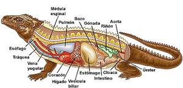

Los reptiles son vertebrados terrestres que pueden vivir en zonas desérticas y calurosas.
Los reptiles están representados por las tortugas, los cocodrilos, los lagartos, las lagartijas y las serpientes.
– La piel es seca y fuerte recubierta de escamas córneas.
– Algunos son tetrápodos y otros como las serpientes no tienen extremidades.
Funciones:
– Son ectotérmicos.
– Respiran por pulmones.
– Su fecundación es interna y son ovíparos. Algunos son ovovivíparos.
– Muchos reptiles son carnívoros y cazan a sus presas.
